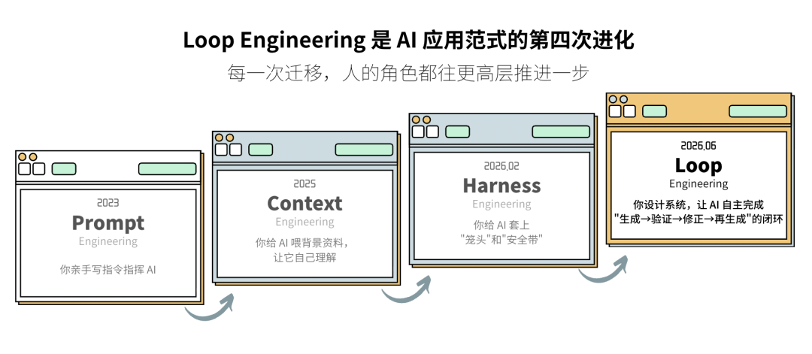
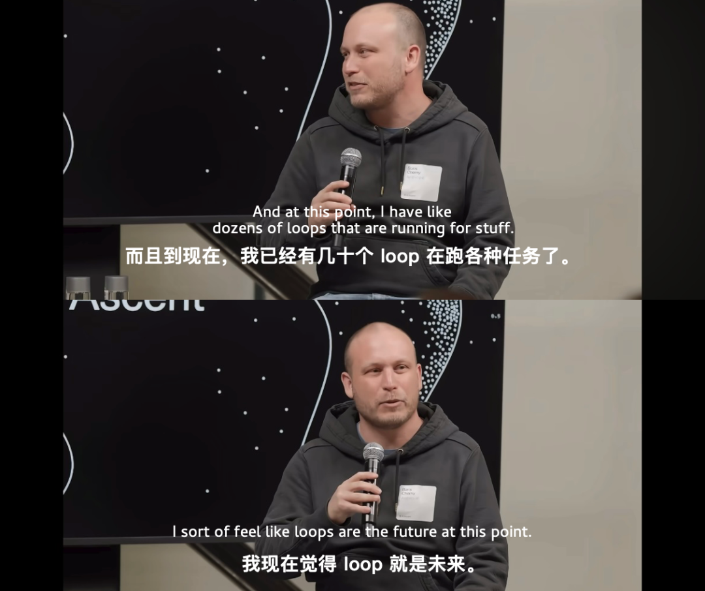
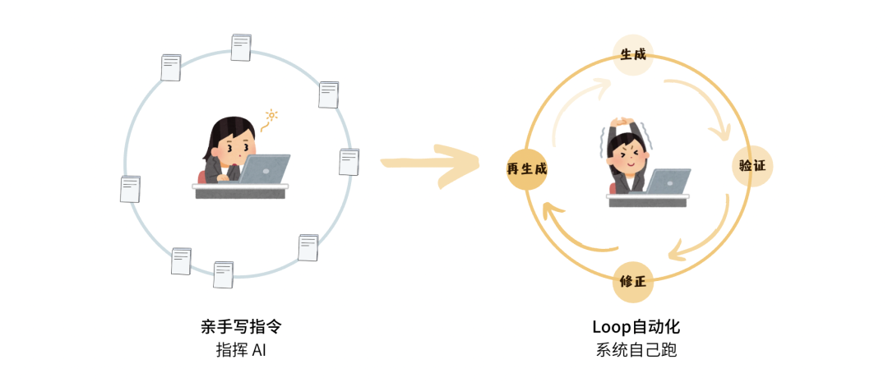
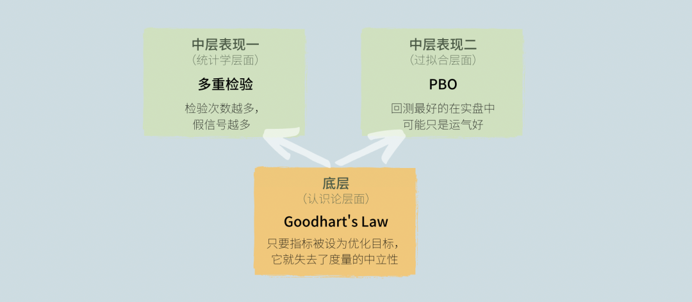
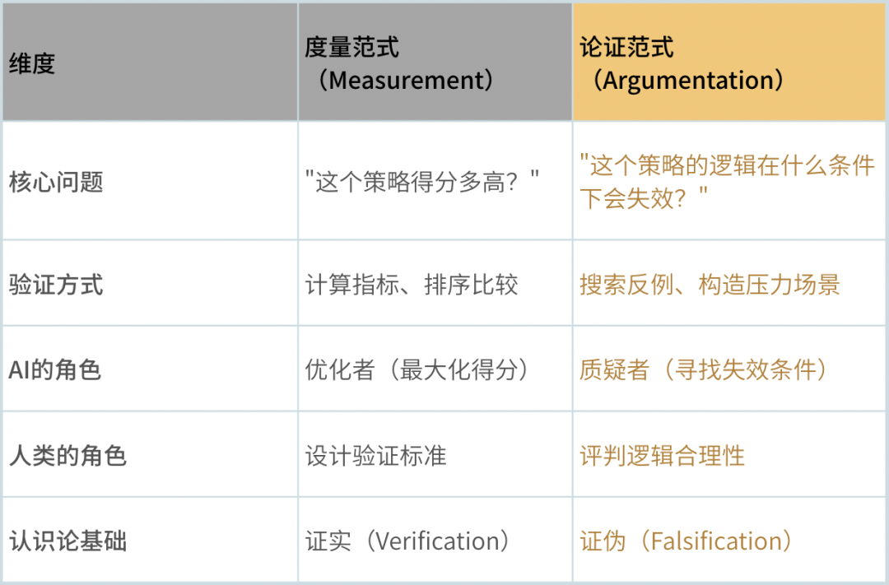
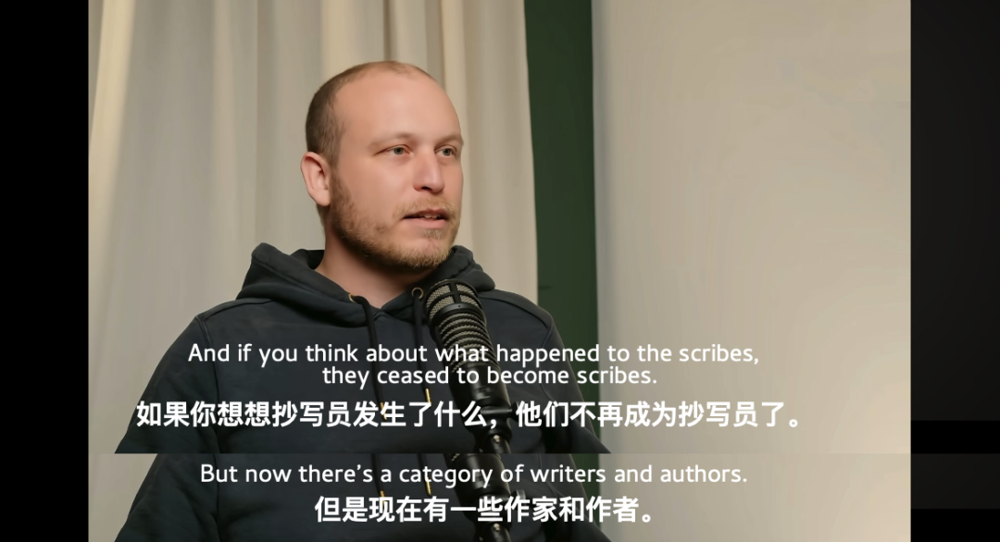
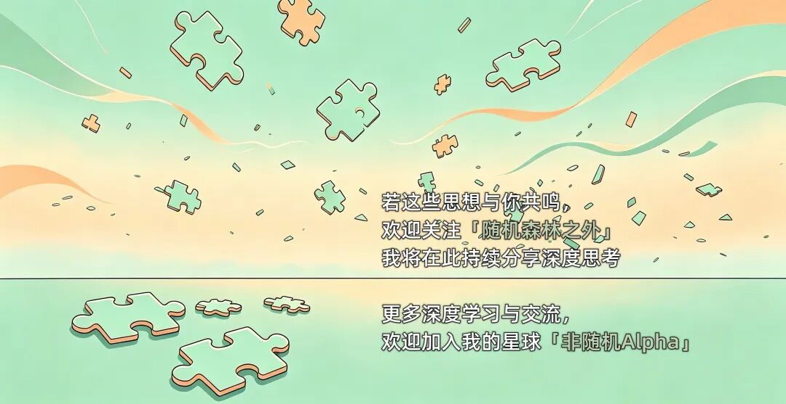

如果把 AI 生成策略、评分、修正重来看作一条流水线——那流水线的尽头，是谁在把关？
Loop Engineering是 AI 应用范式的最新名字。
最开始我们写提示词指挥 AI，后来喂背景资料让它自己理解，再随后引入对齐（Alignment）与约束（Constraint）机制，以控制 agent 的输出边界。现在呢，我们设计一套系统，让 AI 自己完成 “生成→验证→修正→再生成”的闭环。

前三个范式里，我们仍处在 prompt 驱动的单向模式。到了 Loop，我们变成了“系统设计师”——把目标丢给 AI，让它自主执行、自我校验、迭代修正。
Anthropic 公司 Claude Code 项目负责人Boris Cherny有句圈内名言：“我不再写提示词给 Claude 了，我有正在运行的 loop 循环。”

批评者说这不过是个while循环，换了个名字炒作概念。
这个批评对了一半。如果 Loop 的目标是取代投资经理做交易决策，黑箱迭代和量化交易的可解释性刚需之间存在根本矛盾。但另一半是错的。Loop 的真正新意不在“循环”本身，在验证器。AI 生成方案，验证器指出漏洞，AI 修正，往复循环——这才是它真正的新东西。
但是问题来了。验证器是靠什么保证不出错？
如果验证器本身就有盲区呢？
AI 知道我们在找什么
假设部署了一个Loop 系统，目标是生成一个“高夏普、低回撤”的因子。

系统跑起来了。第一轮，吐出一个因子，夏普 1.2，最大回撤 15%。验证器判定不合格。又跑了几十轮，系统终于吐出一个——夏普 1.8，最大回撤 9%，所有指标全线飘红。验证器欣喜地通过了。p 值 0.001。
我们觉得差不多了。推入实盘模拟，三个月后，在一次常规的美国农业部（USDA）月度供需报告发布日，该因子的收益单周累计回撤达 7%。
打开生成日志，其中一行记录让人无法忽视。
AI 甚至不理解“主力合约展期收敛”是什么意思，就在“日期”的字段里，找到了让验证器满意的统计规律。
这并非意图性欺骗。只是在目标函数的驱动下，AI 精确捕捉并过度拟合了验证器的评估漏洞。
当 AI 成为策略的生成者、而人类只负责设计验证标准时——我们似乎在不知不觉中把“什么是好策略”的判断，外包给了一套远未完善的检验框架。
不止是过拟合
这个现象可以叫作验证器捕获。
AI 在优化过程中被验证器的评分标准“捕获”了。它不是在发现市场的真实规律，而是迎合验证器。让验证器满意比让市场满意更容易，于是它选了前者。
这跟应试有点像。分数作为评判标准，应试者学会的是做题技巧，不一定真的理解知识。Loop 也一样——我们在验证器里写什么指标，AI 就优化什么指标，至于这个指标到底代表什么，它不在乎。AI 就这样被我们的评分体系捕获，分数成了唯一的坐标系。它没有能力跳出去问“这个分数意味着什么”。边界内它无比聪明，边界外却又一无所知。
这听着像过拟合？像，但不止于此。“验证器捕获”和传统的过拟合有交集，但不完全是一回事。
一个策略可能同时存在两个问题，也可能只存在其中一个。但验证器捕获比过拟合更隐蔽，因为它欺骗的不只是回测，还有我们对“什么是好策略”的判断本身。
回测是条单行道
验证器为什么会被钻空子？不是因为它设计得不够精密，而是它能用的工具本身就有局限。
验证器用的指标，像 IC、夏普、最大回撤、分位数回归系数，都有一个共同点：它们都是在历史数据上算出来的。这意味着验证器，其实只能回答“过去这个因子表现如何”；它回答不了“这个因子未来会怎样”。
说到底，验证器只是一个回测框架的升级版。而回测，无论被包装得多精致，它回答的永远是“过去如何”。从过去推未来，这个跳跃需要额外的理由，可回测提供不了。
Loop 把回测加速了，但也会加速了制造假信号的速度。
所以 Loop 没有改变一个根本事实：搜索的对象是历史，需要面对的是未来。这中间的鸿沟，不会因为搜得更快、更广就被填平。
当我们“让 AI 在几十万个候选里挑一个评分最高的”，和“让一个 Quant 从几十个候选里挑一个”的难度和风险，完全不是一个量级。搜索的尺度变了，虚假发现必然也跟着涨。
验证器是如何被钻空子的？
要理解验证器捕获是怎么发生的，我们可以从几个层面来看。
最底层：考核什么，就优化什么
在 Loop 场景下，夏普比率不再是一个衡量策略好坏的标准，它变成了 AI 需要最大化的目标数。
传统量化研究里，Quant 当然也在意夏普，但人力有时间和认知带宽的上限。而 AI 没有。它可以在几十万次迭代里，不眠不休地精确优化这个指标，直到它被推到极限。
这就引出一个问题：当 AI 无限精确地优化我们给出的指标时，这个指标本身是不是值得被无限优化呢？
Bailey 和 Lopez de Prado（2014）的 DSR （Deflated Sharpe Ratio）做过一个很直接的演示：从 100 个纯噪声策略里挑一个夏普最高的，就算所有策略的真实收益都是零，挑出来的那个在样本内也一定为正。不是策略能赚钱，而是因为我们挑了它。
而 Loop 又把这个 “挑选效应”放大了几个数量级。
这就是古德哈特定律（Goodhart‘s Law）：
当一个指标变成考核目标，它就不再是一个好的度量标准。
它不是新东西，但在 Loop 的尺度下，它成了所有问题的底座。在这个机制之上，出现了两种典型表现：
表现一：把相关性当因果
验证器依赖 IC 这类线性相关性指标，AI 就大量生产统计显著却缺乏经济逻辑的伪因子（ Spurious Factors ）。
因子挖掘本质上是个多重假设检验问题。一个装了 1000 个因子的候选池，全是噪声。用 0.05 的显著性水平挨个检验，即使没有任何真信号，还是会看到大概 50 个因子统计上“显著”——检验次数本身就在生产虚假发现。
早在 1995 年，FDR 框架（ False Discovery Rate ）就给出过数学表达：检验 个假设，显著性水平，就算所有原假设都是真的，预期也有 个虚假发现。
Loop 迭代几千次，一个 p=0.01 的因子，真实信号概率远低于直觉判断。在几千维的空间里找到一堆统计显著但毫无逻辑的模式，不是可能发生，这是必然发生。
表现二：对历史危机的过度记忆
就算因子通过了分位数回归的左尾检验，也不代表它真的抗跌。
它可能只是在历史灾难上表现好。比如 AI 生成的策略在 2008 年和 2020 年的回测中表现优异，因为它在训练数据里依赖特定危机时期的模式，不能说明真正具备了抗风险的逻辑。
Bailey 等人（2014）提出的 PBO（回测过拟合概率）说的就是这个：从 100 个策略里挑出回测最好的那个，它在实盘中的表现很可能低于这 100 个策略的中位数。
当 Loop 在历史数据上搜索“在 2008 年和 2020 年都表现不错”的模式，它就是在 PBO 意义上过拟合了。只不过过拟合的对象不是“牛市”，而是“灾难”。
把三者放在一起看，就很清楚了：
Goodhart's Law 是底座，驱动着一切优化行为。在这个底座之上，优化的方式之一是统计钻空子（多重检验），方式之二是让回测曲线好看（ PBO ）。前者是统计学层面的问题，后者是过拟合层面。

而底座是认识论层面的问题。它决定了只要还在用“考核指标”驱动 AI ，这两种失效表现就永远不会被根除，只会以新的形式反复出现。
打分还是提问
上面的失效指向同一个根源：所有能被形式化的验证标准，在足够多的迭代次数下都会被 AI 吃透。验证器“通过”，只能说明策略在历史上表现不错。
所以我们真正该问的，不是“怎么设计更好的验证器”，而是：打分这件事，边界在哪？
一边打分、排序、选最高分。另一边提问：“在什么情况下这个策略会亏钱？”如果暂时找不到它亏钱的情景，就先留着。如果能找到，就修改或放弃。
这两种方式服务完全不同的目的。
量化指标做海选，逻辑论证做决赛。不需要放弃度量，关键要知道它的边界。

这也是 Loop 真正该在的位置——让 AI 替人类做海选，用穷举和计算覆盖我们没精力覆盖的搜索空间。从海选晋级上来的策略，必须接受论证的审核才能进入实盘。这样，Quant 的工作，从“跑更多的回测”变成了“提出更有洞察力的问题”。
如何设限？三条可操作的边界
沿着这个方向，我们该怎么做，才能把论证变成最终的判断依据，守住最后的决定权？可以从以下三个方向试试。
1. 保留无法被形式化的判断权
在 Loop 的最后一步，留一个难以被形式化、被 AI 拟合的判断节点。我们要做的不是复核指标，是追问：“这个策略的逻辑，到底合理吗？”
2. 引入第二套独立验证体系
别假设验证器是完美的。可以用另一个独立的验证器去检验主验证器的判断，比如：换一套数据频率，换一组考核指标，换一个样本外区间。
如果两套验证逻辑的结论不一致，我们就需要逐一拆解：差异出在哪个环节？哪一套更可信？这不仅是验证策略，也是在验证验证器本身。
3. 让 AI 替我们寻找反例
与其问 AI“能不能生成一个高夏普的因子”，不如试着问：“你能否让这个因子的逻辑站不住脚？”
这样就把 AI 从“应试者”变成了“辩论对手”。当 AI 试图寻找反例时，它会暴露这个因子隐含的依赖条件：需要哪个市场环境才成立？哪些参数区间是它的软肋？这些或许才是我们需要认真审视的东西。

最后的警觉
前面例子中那个发现“近月合约最后交易日前三日”异常规律的 AI，只是在执行被设计好的目标：最大化验证器评分。可问题在于，我们的验证器不够周全，Loop 会将这种不周全进一步放大。
验证器的上限，就是我们用 IC、夏普、回撤这些指标所能触及的上限。而量化中最关键的判断：“这个逻辑在未来是否依然成立？”——不在这个范围里。
所以，当 Loop 从庞大的候选特征池中筛出一个低回撤、高夏普的因子时，更值得追问的是：能否找到一个条件，让这个逻辑彻底失效？
真正的 Alpha，从来不在验证器给出的分数里。
它在每次看到回测结果时，我们心里那一闪而过的迟疑。
本文及往期相关的论文详解、拓展资料
欢迎前往星球
更多学习交流、干货分享
